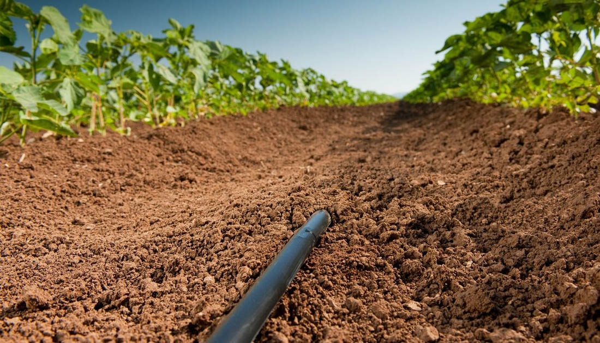

<section class="about_section layout_margin-bottom">
    <div class="container">

        <div class="row">
            <div class="col col-lg-12 img-box">
                
            </div>
        </div>
        <div class="row">
            <div class="col">
                <div class="detail-box">
                    <div class="heading_container">
                      <h2>
                        Acerca de <span>Nosotros</span>
                      </h2>
                    </div>
                    <p>
                      Somos estudiantes de la facultad de Ingenieria de la Universidad del Area Andina, Amantes de la tecnologia y entusiastas de la optimizacion de actividades a travez de las TI.
                      Estamos logrando un cambio con el proyecto Be_Agro que permite a los agricultures utilizar la tecnologia para llevar a cabo sus actividades en el campo por medio de la combinacion de IOT y los
                      sistemas de informacion.
                  </div>
            </div>
        </div>

    </div>
  </section>